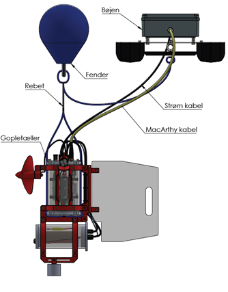
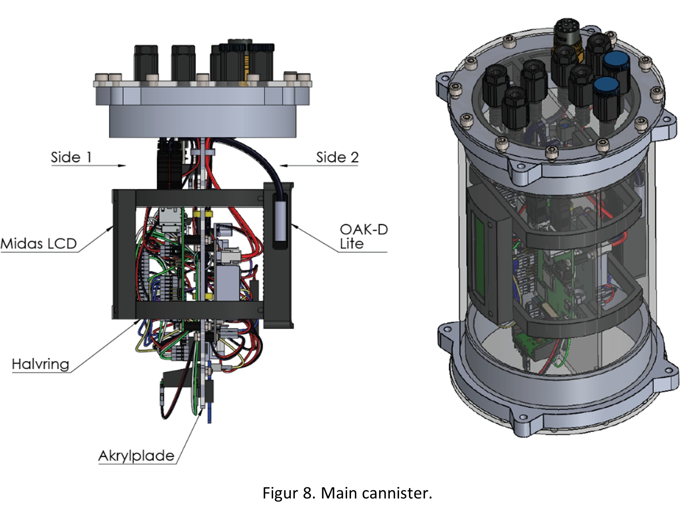
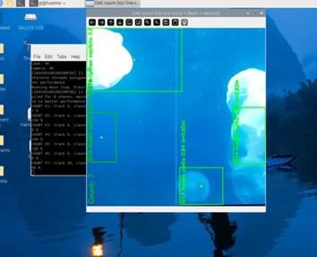

Gopletæller 2.0
Autonom computer vision robot udviklet til registrering og klassificering af gopler i danske farvande i samarbejde med to forskere fra Eco Science på Aarhus Universitet. Projektet kombinerer mekanik, elektronik og software i en undervandsløsning til automatisk dataindsamling.

Projekt
System
Robotten er udviklet til automatisk registrering og klassificering af gopler ved hjælp af computer vision. Løsningen er bygget op omkring Raspberry Pi, kamera, sensorer og datalogning i én samlet undervandsplatform.
Det viser projektet
Projektet viser erfaring med integration af software, elektronik, sensorer og mekanisk design i et samlet system. Derudover arbejde med computer vision, systemopbygning, test og udvikling af en funktionsdygtig prototype.
Galleri
Test i Kattegatcentret
Gopletælleren under test i Kattegatcentret.

Samlet CAD-model
Oversigt over den samlede løsning med gopletæller, bøje, fender og kabelføring.

Intern integration
CAD-visning af intern placering af komponenter, kabler og elektronik.

Software og registrering
Interface der viser registrering og klassificering af gopler i billedet.